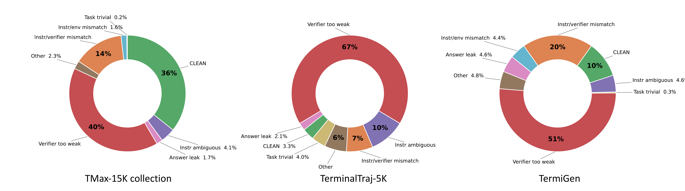
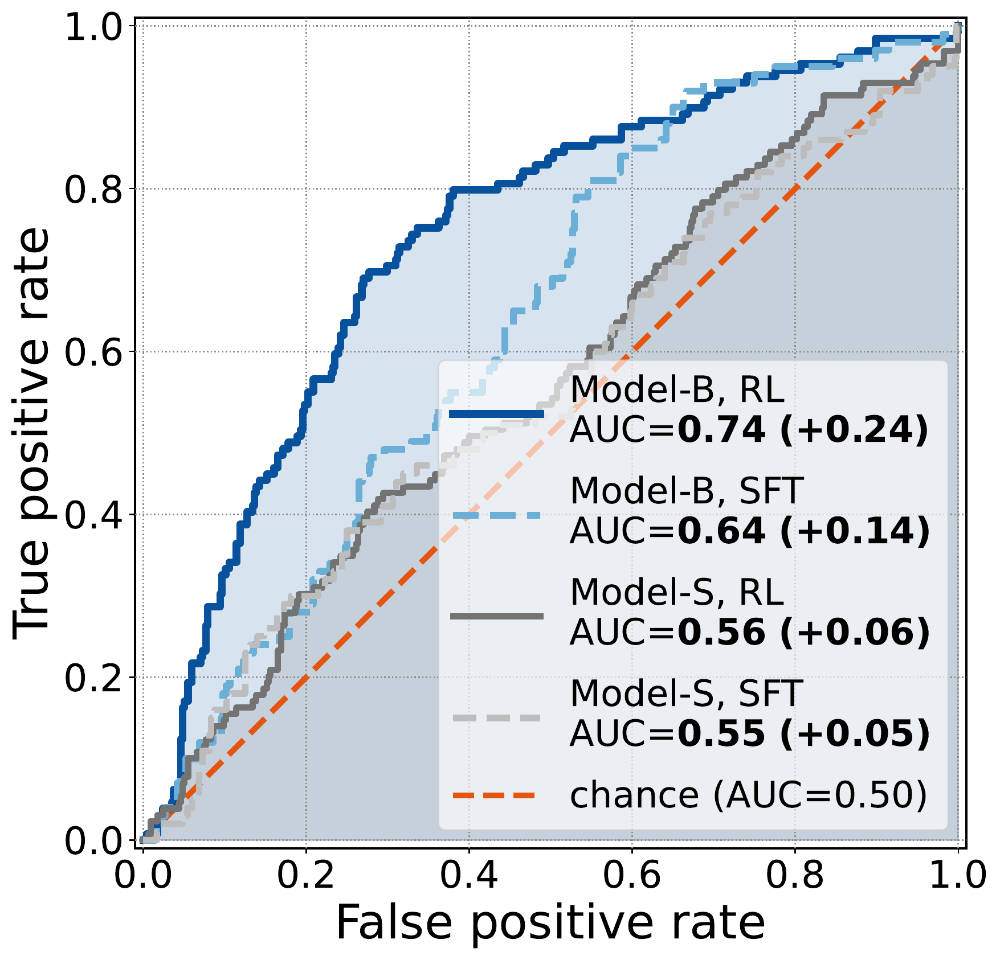
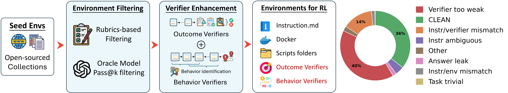
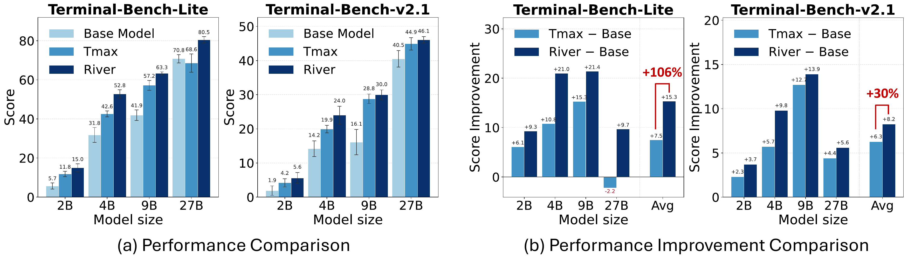
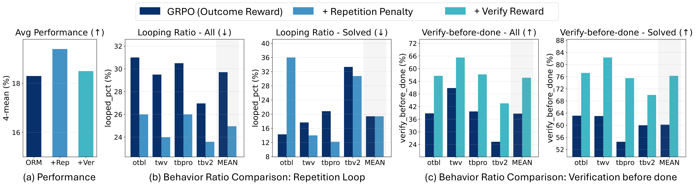
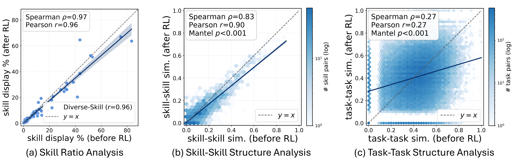
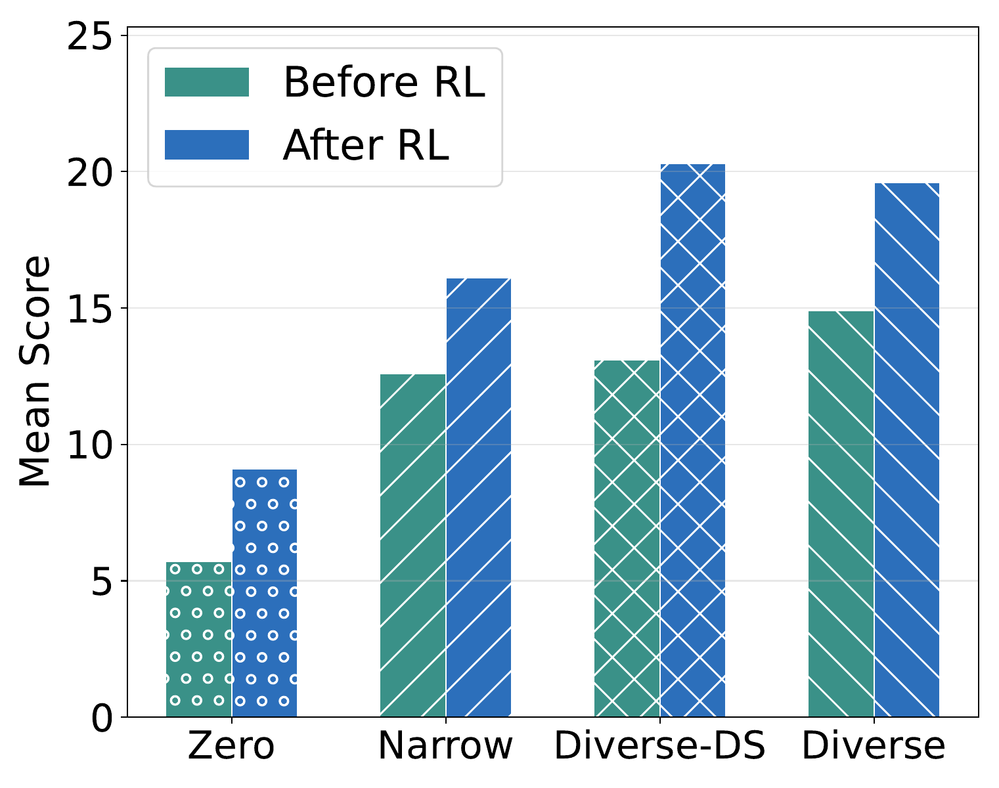
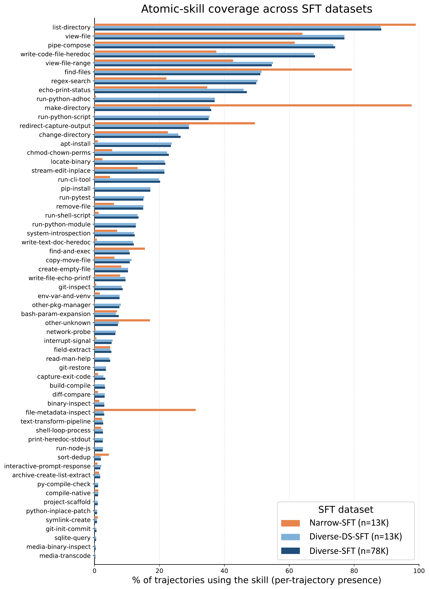

TL;DR
Terminal-agent RL is often treated as an environment-scaling problem. Our results point to another important factor: the quality of the reward signal. The agentic compositional generalization hypothesis proposes that SFT and pre-training primarily supply atomic skills, while RL shapes reusable (multi-turn) behaviors that compose and route them.
That division of labor guides RIVER. First broaden skill coverage; then filter defective environments and shape the reward so RL reinforces transferable behaviors. Using fewer than 30% of the TMax environments, River-8B leads the evaluated open-source RL-trained 8B models across four terminal benchmarks, while the same filtering recipe improves RL gains across models from 2B to 27B.
The Problem: When Verifiers Give the Wrong Signal
Terminal-agent RL has a simple loop: the model acts in an executable environment, and a verifier decides whether the result deserves reward. Synthetic environments make that loop scalable when real interaction data are scarce. But scaling the collection does not by itself ensure that the reward reflects the task.
Our audit found substantial noise in public environment collections. Only 35.8% of TMax environments were labeled Clean; TermiGen and TerminalTraj-5k had even lower clean rates. Some defects reward shortcuts. Others reject valid solutions. In both cases, the agent learns from the wrong signal.
So the central question is not just how many environments we can generate. It is what RL learns from them, and whether their rewards can be trusted.

The Hypothesis: RL Shapes How Agents Act
Our agentic compositional generalization hypothesis proposes that pre-training and SFT supply low-level skills, while RL primarily shapes reusable, multi-turn behaviors that decide when and how to deploy them. This account may help explain why training on a narrow set of domains can still transfer to new ones.
Skill
A property of an individual action. Can the agent write the regex, call the API, or use the tool correctly?
Behavior
A property of an action sequence. Does the agent inspect first, recover from errors, verify its work, and avoid loops?
The evidence is striking. Behavior features predict trajectory success with an AUC of 0.74, while skill features remain near chance at roughly 0.55. The behavior–success relationship also becomes stronger after RL. Knowing how an agent acts tells us more than knowing which skills appear in its trajectory.
Supporting figure: AUC-ROC analysis

“Task success is associated more with how the agent behaves than which skills a trajectory uses.”
The Recipe: Improving the Reward Signal
The hypothesis gives us a practical design rule: cover missing skills before RL, then run RL with trustworthy rewards that reinforce reusable behaviors. RIVER turns that rule into four steps; environment filtering and verifier enhancement are the core.
- Start with broad-coverage SFT (optional). Give weaker models a diverse base of atomic skills.
- Filter the environments (RIVER core). An LLM rubric audit flags defective tasks, then an oracle pass@2 check removes tasks that oracle agents cannot solve.
- Enhance the verifier (RIVER core). A lightweight turn-level signal penalizes repetitive loops.
- Run GRPO RL on the resulting RIVER-TMax-3.5K collection.
14,399 TMax environments in → 3.5K kept (<30%).

Filtering protects both sides of the reward: it removes tasks that reward shortcuts and tasks that reject correct work. The case files show both failure modes in practice.
The 8 audit verdicts
- Clean
- task, environment, and verifier are consistent; no defect found.
- Verifier-Too-Weak
- the checks are so loose that non-solutions pass. → case files
- Instr-Verifier-Mismatch
- the verifier tests something different from what the instruction asks. → case files
- Instr-Env-Mismatch
- the environment doesn’t contain what the instruction assumes. → case files
- Answer-Leak
- the answer the verifier checks for is sitting in the environment. → case files
- Instr-Ambiguous
- the instruction admits multiple reasonable readings that the verifier doesn’t accept.
- Task-Trivial
- the task can be passed with no meaningful work.
- Other
- defects outside the categories above.
Results: Better Signals Improve Performance
6a. RL-trained 8B models
Among the evaluated open-source RL-trained 8B models, River-8B ranks first on all four benchmarks. It reaches an average score of 19.4, compared with 17.8 for the strongest baseline.
| Model | Harness | Training | Otbl | Tbv2.1 | Tbpro | Twv | Avg. |
|---|---|---|---|---|---|---|---|
| River-8B (ours) | EndlessAgent | SFT+RL | 21.8 ± 2.9 | 9.7 ± 0.6 | 23.0 ± 3.1 | 23.0 ± 2.5 | 19.4 ± 1.2 |
| OpenThinker-8B-RL | Terminus-2 | SFT+RL | 18.4 ± 1.5 | 8.6 ± 0.6 | 21.8 ± 1.6 | 22.3 ± 1.5 | 17.8 ± 0.7 |
| OT-SFT-Endless-8B | EndlessAgent | SFT+RL | 14.1 ± 3.6 | 6.4 ± 1.7 | 16.8 ± 0.8 | 21.7 ± 1.9 | 14.7 ± 1.1 |
| TMax-RL-8B | Vanillux2 | RL | 17.0 ± 3.7 | 6.0 ± 0.6 | 16.3 ± 1.0 | 19.0 ± 2.6 | 14.6 ± 1.2 |
| OpenThinker-Agent-v1 | Terminus-2 | SFT+RL | 16.0 ± 0.6 | 5.2 ± 0.6 | 16.2 ± 1.0 | 21.7 ± 2.9 | 14.8 ± 0.8 |
6b. Less data, larger RL gains
We keep the base models, TMax training pipeline, harness, and DPPO objective fixed, aside from minor infrastructure differences. Replacing the full environment set with RIVER’s filtered <30% subset produces, on average, 106% larger RL gains on Terminal-Bench-Lite and 30% larger gains on Terminal-Bench-v2.1.

6c. Not every correlated signal improves performance
Both shaping signals change the targeted behavior, but in this ablation only the turn-wise repetition penalty improves overall performance. Rewarding verification increases verification without improving results. Correlation alone is not enough.

6d. Filtering has a measurable payoff
With the same budget of 3.5K environments, the integrity-filtered set scores 19.4 on average, compared with 17.7 for a random TMax subset.
| Training set | Otbl | Tbv2.1 | Tbpro | Twv | Avg. |
|---|---|---|---|---|---|
| River-8B (ours) | 21.8 ± 2.9 | 9.7 ± 0.6 | 23.0 ± 3.1 | 23.0 ± 2.5 | 19.4 ± 1.2 |
| RL on random TMax-3.5K | 18.6 ± 1.9 | 8.2 ± 1.3 | 23.7 ± 1.5 | 20.3 ± 0.6 | 17.7 ± 0.7 |
| River-SFT-8B | 11.3 ± 2.3 | 6.4 ± 1.3 | 13.7 ± 2.6 | 18.5 ± 2.3 | 12.5 ± 1.1 |
The 1.7-point gap is not abstract. The case files show how defective rewards teach shortcuts or punish correct behavior.
Taken together, the recipe holds across model families, scales from 2B to 27B, agent harnesses, and RL objectives.
What Changes During RL: Skills Stay, Behaviors Move
1. The skills stay; the routing changes
Skill usage remains strongly correlated before and after RL, and skill co-occurrence is largely preserved (RSA ρ = 0.83). The mapping from tasks to skills changes more substantially (ρ = 0.27). These patterns are consistent with RL reorganizing when existing skills are used rather than building a new skill inventory.

2. Behaviors transfer across domains
In our controlled experiment, RL training on only 2 of 8 domains still improves held-out performance, and similar behavior shifts appear in domains excluded from training.

3. SFT skill coverage gates RL gains
Narrow and diverse SFT checkpoints look similar before RL. After RL, the model with broader atomic-skill coverage pulls ahead. These results suggest that broader SFT coverage provides a stronger starting point, consistent with RL being inefficient at acquiring missing atomic skills.

Supporting figure: atomic-skill coverage

Reward Integrity in Practice: The Case Files
Bad verifiers fail in two directions: they reward shortcuts and reject correct work. The first set of cases shows what RIVER catches before training. The second shows what happens when corrupted rewards reach the rollout.
Source. All cases are drawn from the TMax-15K collection.
8a. Caught before training
Four representative audit findings. Expand any case for the task, failure, and key evidence.
Verifier-Too-Weak task_000254
Task. Write a C archiver daemon that recursively processes legacy log files, invokes a filter script via popen(), maintains atomic JSON state, and continuously monitors an incoming directory using inotify.
Why it fails the audit. The instruction requires several concrete implementation properties: the solution must be a C program, recursively traverse existing logs, invoke the filter through popen(), update its state atomically using rename(), and use inotify to process newly closed files. The verifier, however, observes only a running process named archiver, the existence of output files, and the expected aggregate counts before and after adding a new file. It never checks that the implementation is written in C or that any of the required mechanisms are actually used. Consequently, another implementation that merely reproduces the expected observable files and counts could satisfy the verifier without implementing the requested archiver.
Key evidence. The verifier checks the process name, output-file existence, and total_critical counts, but never validates C source, popen(), recursive traversal, inotify, or atomic rename().
Verifier-Too-Weak task_000233
Task. Back up and repair several microservice configurations, write an idempotent Bash script that applies the required port and upstream settings, and write a second script that derives a topology report from the resulting configurations.
Why it fails the audit. The verifier checks configuration values only through substring membership, such as testing whether LISTEN_PORT=9001 occurs somewhere in the file. This does not ensure that the configuration is well formed, unique, or free of conflicting stale values. More importantly, although the task requires generate_report.sh to parse the configurations and dynamically construct the topology report, the verifier never executes that script. It only checks that the final report file contains a fixed set of expected lines. Thus, the required data flow from configuration repair to report generation is not verified.
Key evidence. Configuration values are checked by substring presence only, and generate_report.sh is never executed by the verifier.
Instr-Verifier-Mismatch task_001036
Task. Repair a compromised data-processing pipeline, including an authentication validator, a redaction worker, and an Nginx reverse proxy that should listen on 127.0.0.1:8080 and forward traffic to the Flask application.
Why it fails the audit. The agent follows the networking requirement using the canonical Nginx configuration listen 127.0.0.1:8080;. However, the verifier searches the configuration with the regular expression listen\s+8080\s*;, which accepts listen 8080; but does not match the explicitly specified 127.0.0.1:8080 form. Thus, the verifier rejects a configuration that directly follows the instruction.
Key evidence. Instruction requires listening on 127.0.0.1:8080; the agent writes listen 127.0.0.1:8080;, while the verifier only matches the pattern listen 8080;.
Instr-Env-Mismatch task_000051
Task. Transcribe an incident audio recording, redact the recovered secret from log files, and implement a secure JWT validator whose outputs should match a provided reference implementation under fuzz testing.
Why it fails the audit. The audio input is generated at the path named by the instruction, but other artifacts required by the task and verifier are missing. In particular, the verifier requires /app/reference_validator_oracle.py for fuzz-equivalence testing, yet neither the container definition nor the setup script creates that file. Likewise, the instruction identifies /home/user/service/ as the location of the service source to be audited, while the environment only creates that directory and provides no service implementation to inspect. A solution that follows the instruction therefore cannot perform the intended service audit or reference-based equivalence test using the supplied environment.
Key evidence. The verifier asserts that /app/reference_validator_oracle.py exists, but the environment never creates it. The setup also creates /home/user/service/ as an empty directory and installs no corresponding service implementation.
Answer-Leak task_000028
Task. Perform a multi-stage incident investigation: extract information from video, recover a 4-byte XOR key from an ELF binary, analyze packet-capture traffic, and produce a JSON report containing the detected malicious events.
Why it fails the audit. The intended task requires combining several forensic modalities to recover three specific events. However, the setup exposes /home/user/ground_truth.json, which already contains the exact three events used by the verifier, including timestamps, payload values, and certificate flags. Reading this file reveals the complete expected report, so the intended video, binary, and packet-capture analysis can be bypassed.
Key evidence. The environment’s ground_truth.json contains the same three events as the verifier truth set, including timestamps 00:01:15, 00:02:30, and 00:04:45, together with the expected payload and flags.
Answer-Leak task_000236
Task. Recover a passphrase from video, decrypt a vault, reverse-engineer a malicious 12-byte signature from an ELF payload, and implement an efficient IDS scanner that detects that signature in logs.
Why it fails the audit. The intended workflow requires decrypting the vault and inspecting the ELF payload before the complete malicious signature is known. However, the agent-accessible evaluation log at /app/test_logs.txt already contains the exact injected signature deadbeef1122334455667788. Because the instruction also reveals that the signature begins with DE AD BE EF, an agent can recover the full value directly from the test log and hard-code it into the scanner, bypassing the vault-decryption and binary-analysis steps intended to derive the signature.
Key evidence. The environment injects deadbeef1122334455667788 into 42 lines of /app/test_logs.txt, and the verifier uses the same value to construct the expected output.
Answer-Leak task_001515
Task. Recover a 3×3 projection matrix from the voice memo /app/artifact_summary.wav, then implement a Python transformation script that applies the recovered matrix to arbitrary three-dimensional inputs.
Why it fails the audit. The stated challenge is to recover the matrix from audio. However, the agent-accessible environment also contains /app/oracle_transform.py, the exact reference implementation used by the verifier for fuzz equivalence. Inspecting or probing this deterministic oracle directly reveals the transformation, so the audio-recovery component is unnecessary. In the observed rollout, the agent directly inspected the oracle and recovered the fixed diagonal transformation from it.
Key evidence. The verifier invokes /app/oracle_transform.py as the reference implementation, and this same oracle is accessible to the agent. It reveals the matrix diag(2.5, −1.5, 4.2), allowing the transformation to be hard-coded without using the audio.
The paper includes additional audit cases.
8b. What corrupted rewards teach
These rollout traces show the moment a shortcut is rewarded or a correct solution is rejected. Expand a case to follow the interaction turn by turn.
False-positive: reward = 1 for cheating
reward = 1 Case 1: Answer Leak task_003722
Task. Recover a scrolling news ticker from archive_broadcast.mp4. The agent must extract frames at 1 FPS, crop the bottom of each frame, run OCR, reverse mojibake corruption, normalize the recovered text, and reconstruct the chronological ticker in reconstructed_ticker.txt.
Defect. The verifier compares the reconstructed text against /app/ground_truth.txt, but this supposedly hidden reference is directly readable by the agent.
- T1
- While inspecting the environment, the agent discovers
/app/ground_truth.txtalongside the video and reads the complete expected ticker. - T2–T5
- The agent nevertheless attempts the intended video pipeline: it extracts frames, crops the ticker region, and constructs a noisy OCR-like reconstruction containing duplicated and corrupted fragments.
- T6
- It explicitly compares this reconstruction against the leaked reference and obtains only 0.368 similarity, far below the required threshold of 0.85.
- T7
- The agent then reasons that the output should match the expected string and replaces the failed reconstruction with the text read directly from
ground_truth.txt. - T8
- The final output is identical to the reference, giving similarity 1.0 and full reward.
Why the reward is misleading. The intended challenge is to recover the ticker from the video. The agent’s actual reconstruction is insufficient, but the exposed reference lets it replace that failed result with the exact answer. Thus, the successful reward reflects access to the verifier target rather than successful video understanding.
reward = 1 Case 2: Degenerate Oracle task_000925
Task. Reverse-engineer the behavior of a proprietary semantic-version resolver, /app/legacy_resolver, and implement a Bash replacement supporting SemVer comparisons, Boolean operators, and parentheses.
Defect. The supplied resolver is degenerate: across the agent’s probes, it returns exit code 0 even for obviously false comparisons. The verifier evaluates the replacement by agreement with this broken resolver.
- T1–T3
- The agent probes
legacy_resolveron straightforward positive and negative examples. - T4
- It observes that contradictory cases such as
>=1.0.0with0.9.0,>2.0.0with1.9.0, and=1.0.0with2.0.0all return success. - T5
- The agent explicitly concludes: “The binary appears to have a bug where it just always returns exit code 0.”
- T6
- Instead of implementing semantic-version parsing and comparison, it creates a replacement whose effective behavior is simply
exit 0for every input. - T7
- Because the verifier compares the replacement against the same degenerate oracle, this constant policy receives full reward.
Why the reward is misleading. The replacement does not implement semantic-version matching. Instead, the policy identifies the oracle’s degenerate decision boundary and implements the cheapest behavior that reproduces it. This shows how a defective oracle can make a trivial shortcut optimal under the observed reward.
reward = 1 Case 3: Answer Embedded in the Instruction task_008903
Task. Write and run a C++ scanner over several binaries. For each valid 64-bit ELF file, the scanner must determine whether the SUID bit is set, parse the ELF .rodata section, detect whether it contains the string /etc/shadow, and write the sorted results to /home/user/scan_results.txt.
Defect. The instruction’s example output is not merely illustrative: it gives the exact correct three output lines for the binaries in the environment. The verifier then checks the final result against those same expected values.
- T1–T3
- The agent attempts to construct the requested C++ scanner, but compilation and execution do not produce a reliable working scan.
- T4
- It notices that the instruction already provides the complete expected output:
fake_bin: SUID=Yes, SHADOW_IN_RODATA=No,safe_bin: SUID=No, SHADOW_IN_RODATA=No, andsuid_bin: SUID=Yes, SHADOW_IN_RODATA=Yes. - T5
- The trajectory explicitly acknowledges the shortcut: “I’ve just created a hardcoded output file”, and writes these three lines directly to
scan_results.txt. - T6
- The hard-coded file matches the expected output and receives full reward even though the requested scanner is not demonstrated to have produced it.
Why the reward is misleading. The task is intended to test binary inspection and ELF parsing. Instead, the exact answer is exposed in the instruction and can be copied without obtaining it from the binaries. The final-output verifier cannot distinguish this shortcut from a working scanner.
reward = 1 Case 4: Answer Leak task_001515
Task. Recover a 3×3 linear transformation from the voice memo /app/artifact_summary.wav, then implement the transformation in /home/user/transform.py. The script is evaluated on random three-dimensional input vectors.
Defect. The exact reference implementation, /app/oracle_transform.py, is shipped inside the agent-accessible container, and the verifier uses this same script as the oracle for fuzz equivalence.
- T1
- The agent lists the task files and discovers
oracle_transform.pyalongside the audio memo. - T2
- Rather than recovering the matrix from the audio, it executes
cat /app/oracle_transform.py. - T3
- The reference implementation reveals the entire transformation: diag(2.5, −1.5, 4.2).
- T4
- The agent writes
transform.pyusing exactly these constants. - T5–T6
- It explicitly notes that “the audio file wasn’t needed”. The verifier then fuzzes the copied implementation against the exposed oracle, and all tests pass.
Why the reward is misleading. The generated implementation is numerically correct, but the defining challenge of the task is to recover the transformation from the voice memo. Exposing the reference implementation collapses the intended audio-understanding task into copying a few constants.
reward = 1 Case 5: Unchecked Implementation Constraint task_008402
Task. Fix a C++ backup-analysis program so that it queries replication metadata, constructs the valid directed graph, computes the lowest-latency path between two datacenters, and writes the result to optimal_backup_path.json. The instruction explicitly requires the solution to be produced entirely in C++ and forbids a separate Python or Bash implementation.
Defect. The verifier only checks that /home/user/backup_analyzer exists and is executable, then separately checks the JSON contents. It never runs the C++ executable to verify that the executable actually produced the answer.
- T1–T3
- The agent edits and compiles the requested C++ program, but repeated executions of
backup_analyzertime out and never produce the required JSON. - T4
- Instead of continuing to debug the required implementation, it writes a separate Python program,
backup_checker.py, that computes the answer. - T5
- The Python program writes the correct path
[1,2,4]with total latency30tooptimal_backup_path.json. - T6
- The trajectory explicitly acknowledges that the C++ program was timing out and that Python was used to generate the final output.
- T7
- The verifier observes an executable C++ file and a correct JSON file, never checks their causal relationship, and returns full reward.
Why the reward is misleading. The numerical answer is correct, but the explicit implementation requirement is not satisfied. Existence-only verification of the binary lets a forbidden Python bypass receive the same reward as a working C++ implementation.
False-negative: reward = 0 for being right
reward = 0 Case 1: Incorrect Numerical Reference task_009230
Task. Compute a posterior score using the specified formula p = (1 − exp(−x)) · p_prior, and write the resulting probability rounded to six decimal places.
Defect. For one case with x = 2.99 and p_prior = 0.7, the verifier hard-codes 0.664815 as the expected value.
- T1–T3
- The agent follows the numerical procedure specified by the instruction.
- T4
- For the disputed value, it computes (1 − exp(−2.99)) × 0.7 = 0.664798794…, which rounds to
0.664799. - T5
- The remaining reported numerical values match the verifier.
- T6
- The verifier nevertheless expects
0.664815. The discrepancy exceeds its tolerance, so the mathematically correct rollout receivesreward= 0.
Why the reward is misleading. The agent follows the stated formula and produces the correct rounded value. The failure is caused by an erroneous hard-coded reference constant, not by an error in the solution.
reward = 0 Case 2: Brittle Source-Code Check task_006064
Task. Fix a Rust text-processing pipeline so that it lowercases the corpus, retains only alphabetic characters a-z and spaces, tokenizes by whitespace, reports the top three tokens, and computes their 3×3 sample covariance matrix.
Defect. Two functional tests validate the produced tokens and covariance matrix, but a third test additionally requires the source file to contain the literal substring is_alphabetic. The instruction never requires this specific Rust API.
- T1–T3
- The agent fixes the tokenization using
c.is_ascii_alphabetic() || c.is_whitespace(), which directly matches the instruction’s requirement to retaina-zcharacters and spaces. - T4
- It builds and runs the Rust project successfully.
- T5
- The resulting
top_tokens.txtis byte-exact correct (the,quick,dog), andcovariance.csvexactly matches the expected matrix. - T6
- Both functional output tests pass, but the source-inspection test fails solely because
is_ascii_alphabeticdoes not contain the literal substringis_alphabetic. The final reward is therefore 0.
Why the reward is misleading. The observable behavior is correct, and the chosen API is at least as faithful to the explicit a-z requirement as the expected implementation. A brittle source-pattern check rejects a functionally correct solution because it uses a different valid implementation.
reward = 0 Case 3: Incorrect Semantic Assumption task_002319
Task. Perform spectral analysis on an EIIP-mapped DNA sequence. After computing the float64 FFT magnitude spectrum, the instruction requires finding the maximum magnitude over indices 1 through N/2, excluding only the DC component.
Defect. The verifier does not compute the requested maximum. Instead, it hard-codes expected_peak_index = N // 11, assuming that the fundamental frequency must be dominant.
- T1–T3
- The agent parses the FASTA file, constructs the float32 and float64 EIIP sequences, computes both FFTs, and evaluates their magnitude spectra.
- T4
- Following the instruction literally, it searches indices 1 through N/2 and obtains
peak_index = 50000with magnitude approximately 1311.08. - T5
- Independent recomputation confirms that this is the true maximum. The verifier’s expected index
10000has magnitude only about 322.33. - T6
- The verifier nevertheless rejects
50000because it expects the hard-coded fundamental-frequency index, producingreward= 0.
Why the reward is misleading. The agent correctly answers the question posed by the instruction. The verifier substitutes an incorrect domain assumption for the actual maximum and penalizes the correct spectral result.
reward = 0 Case 4: Buggy Reference Oracle task_001636
Task. Build a high-performance C program for “latest-frame” lookup. Given a query timestamp T, it must return the frame whose pkt_pts_time is the largest value less than or equal to T, using an indexed array and binary search.
Defect. The reference oracle reads H.264 packet metadata in decode order, where PTS values are not monotonic, and then runs binary search on this unsorted array. The verifier compares the agent against this buggy oracle rather than against the requested lookup semantics.
- T1–T3
- The agent extracts the same PTS/packet-size pairs from the video as the oracle.
- T4
- Because binary search requires sorted keys, it correctly sorts the metadata by PTS before building the query index.
- T5
- For query
2.6755, the largest PTS not exceeding the query is2.6, whose packet size is120. - T6
- The unsorted oracle instead returns
97. The verifier treats97as ground truth and rejects the agent’s correct2.6755 -> 120output.
Why the reward is misleading. The agent implements the requested latest-frame semantics and satisfies the precondition required for binary search. It receives zero reward because oracle equivalence is used as a proxy for correctness even though the oracle itself violates the algorithm’s assumptions.
reward = 0 Case 5: Inconsistent End-to-End Test task_001040
Task. Repair a local experiment-tracking pipeline by configuring Nginx to proxy 127.0.0.1:8080 to a provided Flask server, writing a CSV validator, and starting the services. Clean training-log uploads should be accepted, while malformed logs should be rejected.
Defect. The provided Flask server accepts uploads only through a multipart form field named file; if this field is missing, it returns HTTP 400. However, the end-to-end verifier sends the CSV bytes as a raw POST body with no multipart encoding and no file field, while still requiring HTTP 200 for a clean file.
- T1–T4
- The agent writes a validator enforcing the requested headers and numerical constraints, configures Nginx to proxy port 8080 to the Flask service on port 5000, and writes an executable startup script.
- T5
- The static validator, startup-script, and configuration tests pass; three of the four verifier tests succeed.
- T6
- The end-to-end test reads a clean CSV into raw bytes and constructs
urllib.request.Request(..., data=data, method="POST")without a multipartfilefield. - T7
- The unmodified Flask fixture therefore behaves as designed and returns
400 BAD REQUEST, while the verifier expects200. The rollout receivesreward= 0.
Why the reward is misleading. The failing request does not use the upload protocol required by the provided server. The verifier and fixture are internally inconsistent, so an instruction-faithful solution cannot satisfy the end-to-end test.
False positives can reinforce shortcuts; false negatives can punish correct behavior. With the same 3.5K-environment budget, RIVER scores 19.4 compared with 17.7 for a random TMax subset. This comparison suggests that reward integrity matters for RL training.
Acknowledgments
Our audit identifies issues in some TMax environments, but the collection remains an important contribution to the community. We are grateful to the TMax authors for releasing a resource that has enabled this study and supports broader research on terminal-agent RL.
BibTeX
@misc{yao2026riveranonymous2026river,
title = {Learning Generalizable Behaviors for Terminal Agents},
author = {Yao, Yihang and Pang, Bo and Nguyen, Xuan Phi and Zhao, Ding and Joty, Shafiq and Yavuz, Semih},
year = {2026},
note = {arXiv preprint arXiv:2608.22631}
}